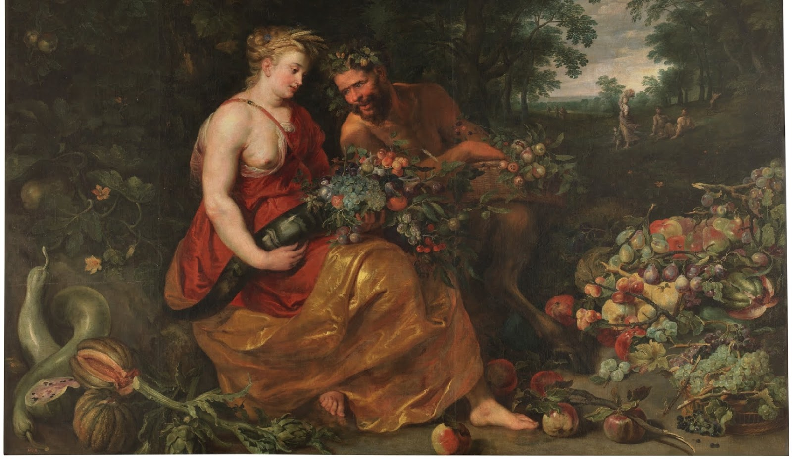
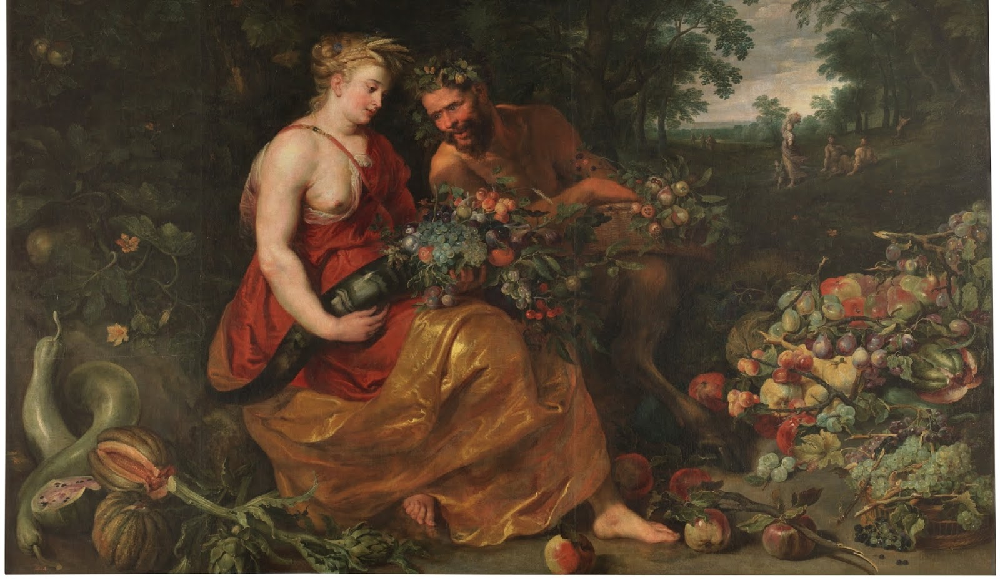

Deméter
Introducción
Démeter, o Ceres en la mitología romana, era hija de Cronos y Rea. Como diosa de la tierra, la agricultura y los cereales, era una de las diosas griegas más importantes. También controlaba las estaciones. Tuvo una hija con Zeus, Perséfone, la cual vivía con Hades en otoño e invierno, y con ella en la tierra en primavera y verano, por eso en las épocas en las que estaban juntas todo en la tierra prosperaba dada la felicidad de Démeter al estar con su hija.
 
Deméter enseñó a la humanidad las artes de la agricultura: sembrar semillas, arar, recolectar, etcétera. Era especialmente popular entre las gentes del campo, en parte porque eran los beneficiarios más directos de su ayuda, y en parte porque eran más conservadores a la hora de mantener las viejas costumbres.
Nacimiento
Nació de Rea e inmediato fue tragada por Cronos. Estuvo atrapada en el vientre de éste hasta que Zeus los liberó.
Algunos mitos
El rapto de Perséfone
Démeter se encontraba en un campo, recogiendo flores y jugando entre la hierba. Zeus la vio y quiso yacer con ella, así que la violó. De su unión nació Kore. Kore creció y se convirtió en una bella joven. Un día, Kore se encontraba recogiendo flores en compañía de sus amigas las sirenas, y en el momento en que va a tomar un lirio, la tierra se abre y por la grieta surge un carro tirado por caballos negros con Hades en él, y toma y se lleva a Kore. De esta manera, Kore cambió de nombre a Perséfone y se convirtió en la reina del Inframundo. Démeter castigó a las sirenas por no hacer nada por evitar que se raptasen a su hija, convirtiéndolas en criaturas mitad ave, mitad mujer. Démeter inició unos largos y tristes viajes en busca de su adorada hija, durante los cuales la tierra se volvió estéril.
Deméter y Poseidón
Poseidón persiguió a Deméter, que entonces sólo tenía en su cabeza el encontrar a su desaparecida hija Perséfone, se transformó en una yegua para evitar las solicitudes del dios, pero no pudo ocultar su origen divino entre los caballos del rey Oncos. Poseidón se transformó en semental y la cubrió. Deméter se puso literalmente furiosa por este asalto, pero lavó su ira en el río Ladón. Le dio a Poseidón una hija Despoina, pero que cuyo nombre no podía ser pronunciado fuera de los misterios eleusinos, y un corcel de negras crines llamado Arión.